Waste to Drain Installation Procedure for SN#01937 and Below
Procedure
- Power down the Panther System.
- Power down the Panther PC.
- Remove the side panels to allow access for the Waste-to-Drain Installation.
- Open the Waste Drawer and Universal Fluids Drawer to allow access to the inside of the system.
- Unlatch the Vacuum Pump Module and pull the module away from the back panel.
- Place absorbent pads over the chassis floor near the Vacuum Pump Module to protect the inside of the system.
- Place absorbent pads on the floor behind the Panther where the hole will be punched.
- With a permanent marker, mark a point using the following steps:
- Locate the PEMs on the rear chassis panel to the right of the Vacuum Vent holes.

Note—Vacuum vent location may differ on older instruments.  Create a straight line to the left of the PEMs with a straight edge and permanent marker.
Create a straight line to the left of the PEMs with a straight edge and permanent marker.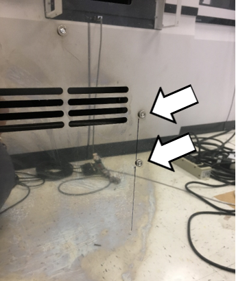
- From the lower PEM, measure 30 mm down and make a mark.
- Make a mark 30 mm to the right of the previous 30 mm mark at a 90 degree angle.
- Locate the PEMs on the rear chassis panel to the right of the Vacuum Vent holes.
- Drill a dimple at the last marked location with a drill on low-speed using a 5.5 mm drill bit fitted with a stop collar.
- Finish drilling the 5.5 mm hole.
Note—Be sure the drill stop collar is in place. - Set the stop collar to drill a 3/8" hole on the step drill bit.
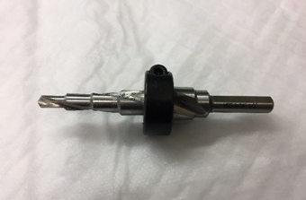
- Apply a layer of lubricant to the step drill bit.
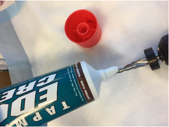
- Enlarge the hole to 3/8" using the step drill on low-speed.

Caution—Be sure the drill is perpendicular to the surface being drilled so the drill bit does not drift. - Prepare the hydraulic pump and ram using the instructions included with the hole punch kit.
Caution—Review the safety warnings in the Greenlee instruction manuals for the hydraulic pump and ram.
The pressures reached create dangerous conditions that should be known by everyone working with the equipment.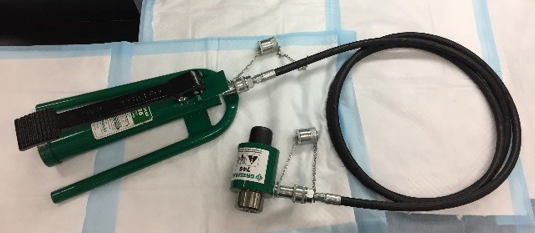
- Screw the hose attachment collar onto the pump and ram.
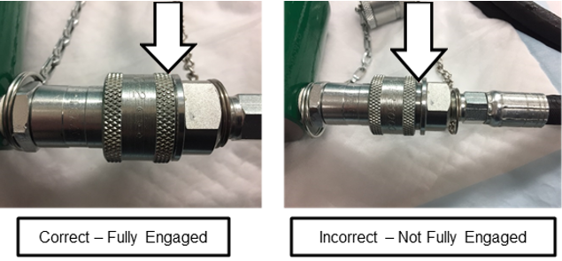
- Press the pressure release lever on the hydraulic pump to check that the ram is fully extended.
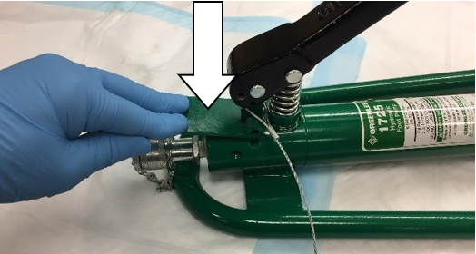
- Insert the small 3/8" X 3/4" draw stud adapter into the hydraulic ram.
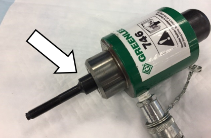
- Lightly lubricate the punch and die.
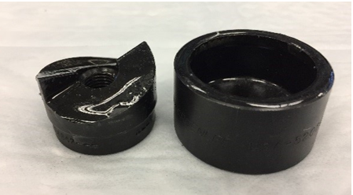
- Slide the small 1 1/4" punch die onto the draw stud with the open end of the die facing away from the ram.
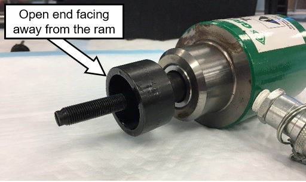
- Insert the draw stud through the 3/8" hole in the back chassis of the Panther created in the earlier step.
- Thread the punch of the punch/die onto the draw stud from inside the Panther with the cutting surface facing the back chassis wall.
Note—Thread the punch until it is finger tight to reduce the distance the ram needs to pull. 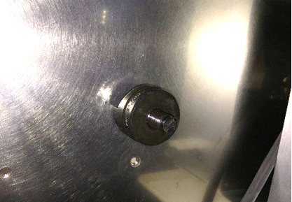
- Remove the pump hold-down pin from the pump handle.
Warning—Wear safety glasses during any punching process. The hydraulic ram exerts pressures in excess of 150,000 kPa (22,000 psi) during its punch cycle. 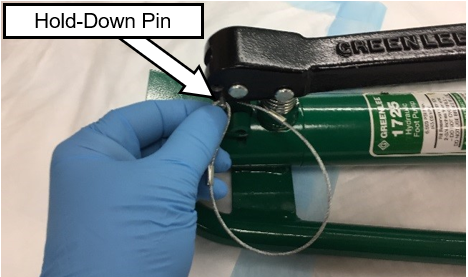
- Inform all personnel present to not stand directly behind the ram while it is being cycled.
Warning—There are dangerous pressures present and a system failure at pressure can cause injuries. Standing directly behind the ram is EXTREMELY dangerous. - Slowly and gently press the foot pump down with your foot to draw the punch against the back of the Panther chassis.
Note—Double-check that the punch and die are in the proper locations and no cables or hoses are pinched or cut. - Reposition the punch if needed.
If necessary, release the pressure on the pump by quickly depressing the pressure release lever. - Once in the proper location, activate the ram to punch the hole.
- When the hole is punched, the ram, die, and punch may fall out of the hole. Hold the ram so that the assembly doesn't fall to the floor.
- If done properly, the resulting 1 1/4" slug left inside the punch/die is cut in half and easily removed.
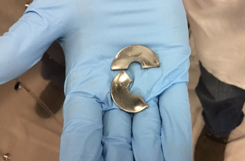
- Press and hold the pressure release lever on the pump while watching the ram/draw-stud fully extend.
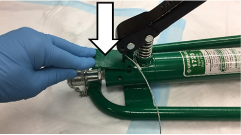
- Remove the punch and slug from the die.
- Remove the punch/die and the draw stud from the hydraulic ram.
- Soften the sharp edges of the hole with a deburring tool.
Note—If needed, click this link to see how to use the deburring tool.
Use-a-Deburring-Tool - Carefully remove the absorbent pads that were inside of the Panther.
Caution—Do NOT allow the metal shavings on the absorbent pads to fall into the system. Clean up any metal shavings that remain inside. - Gather the absorbent pads that were placed behind the Panther. Clean up all metal shavings remaining in the work area.
- Remove the remaining cutting oil from the cutting area with a lint-free wipe and alcohol.
- Proceed to Create a Access Hole for Tubing in the Waste Drawer.

 button at the top of the page to send feedback, comments, or change requests.
button at the top of the page to send feedback, comments, or change requests.